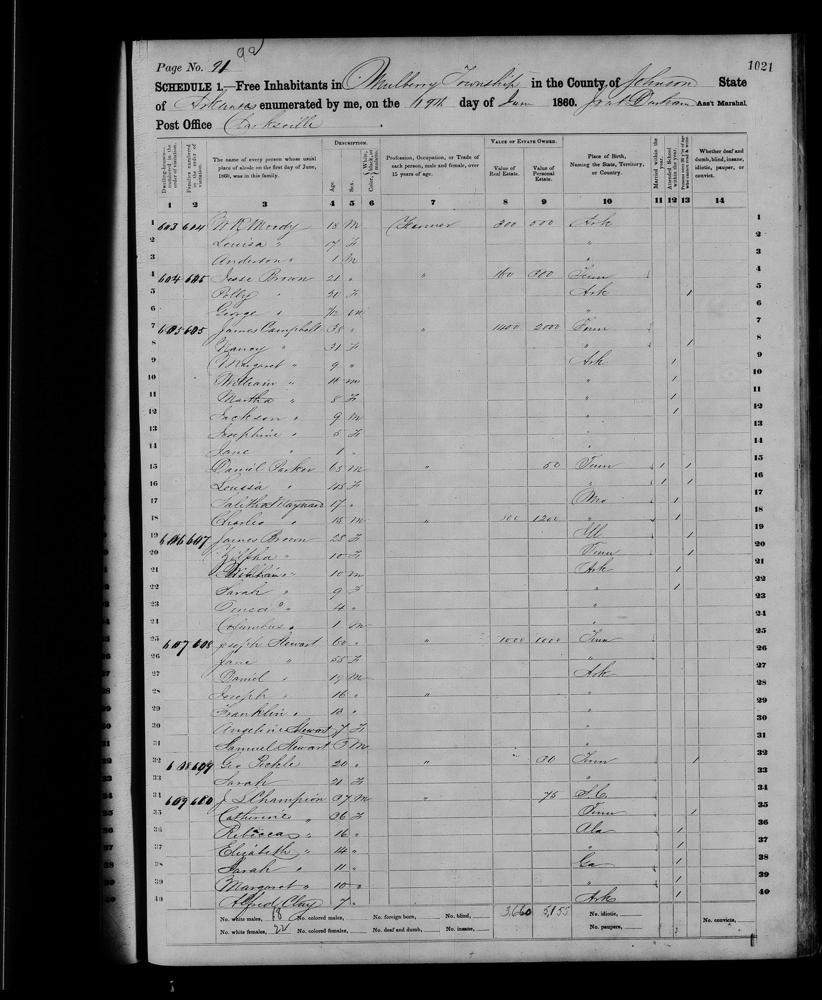
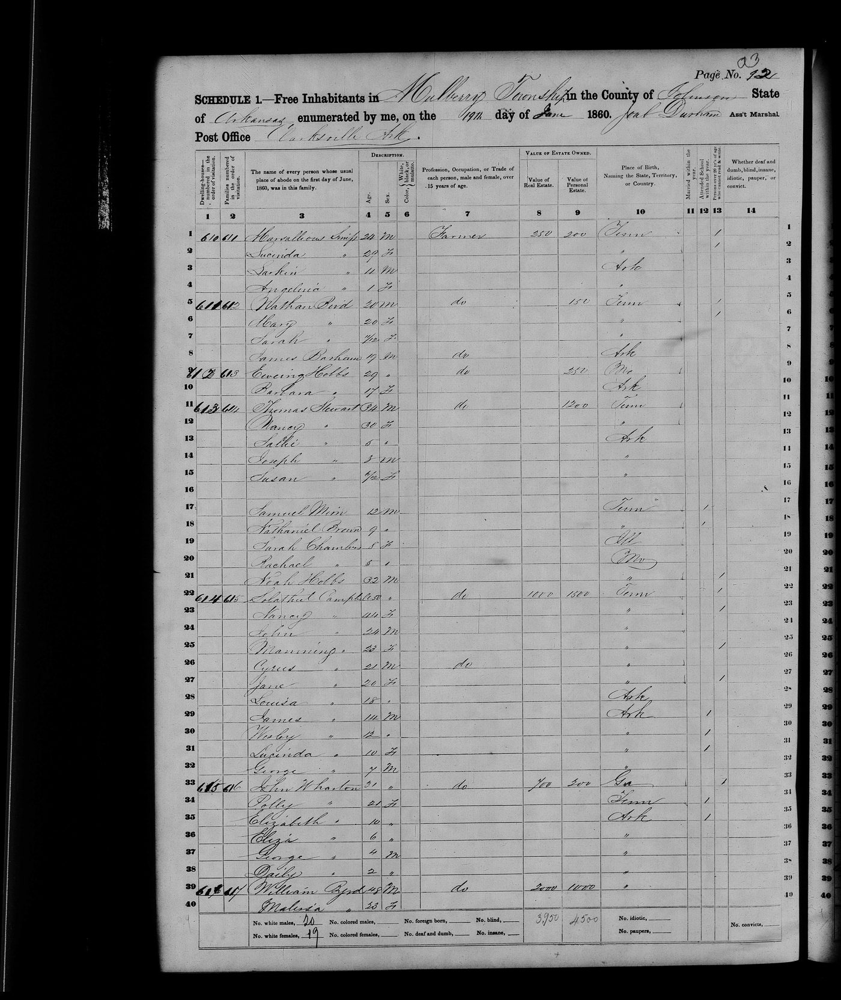
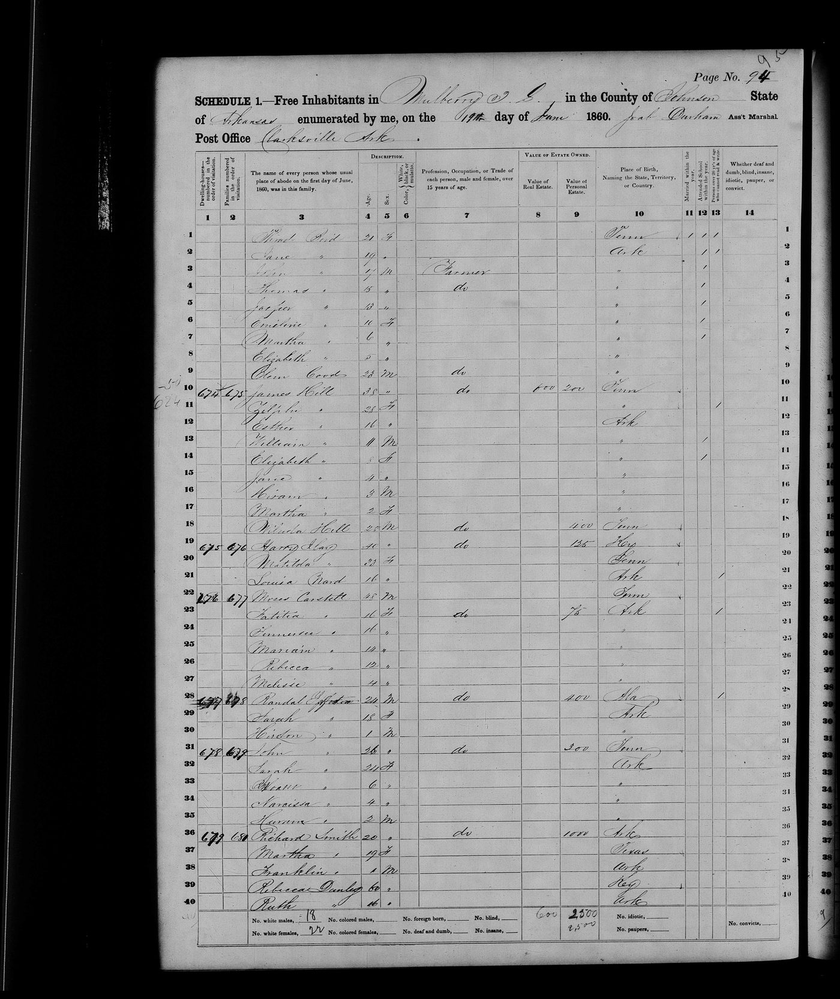
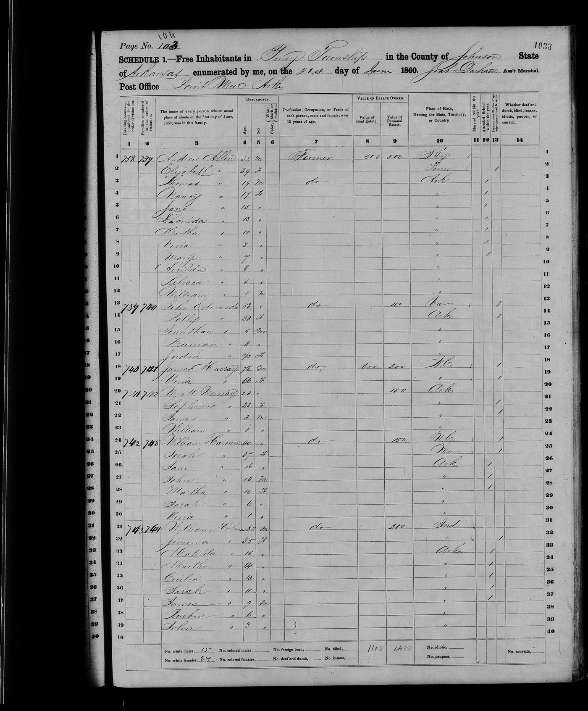
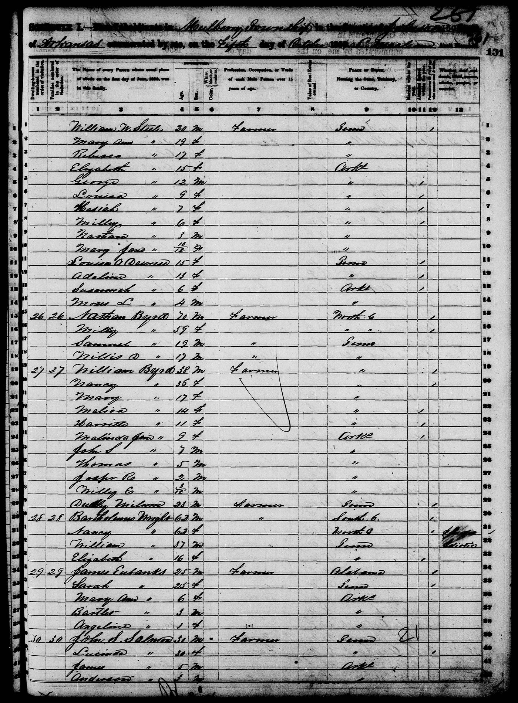
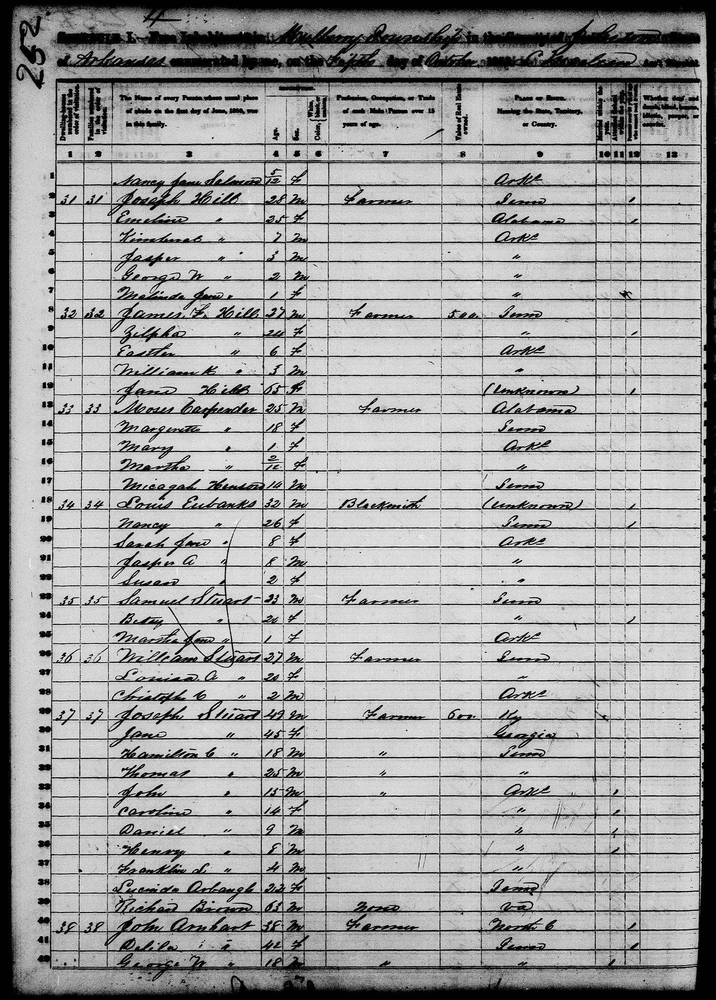
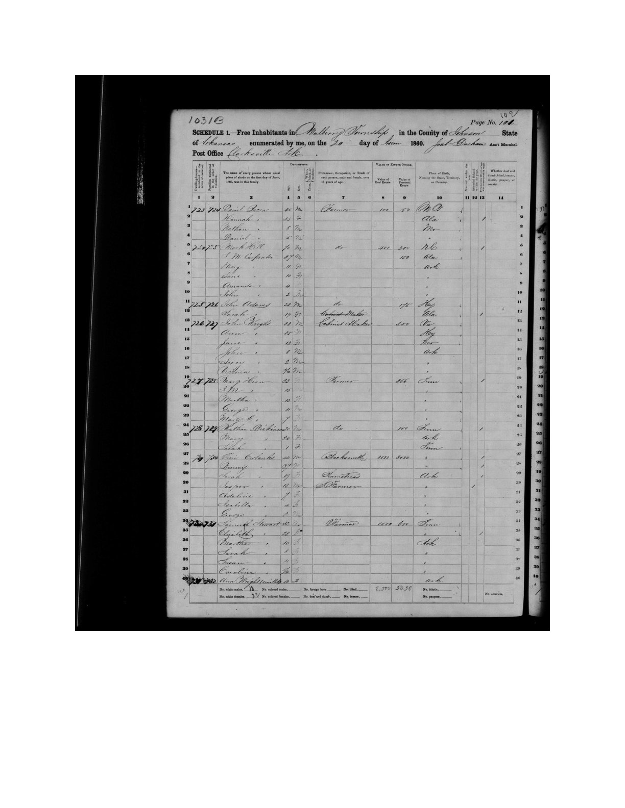

Grant Readiness & Fiscal Sponsor Packet New
The Horner Civil War Archive is now organized as a partner-ready public history initiative. This packet includes a one-page case statement, fiscal sponsor request letter, 12-month action plan, startup budget, partner target list, and grant roadmap.
Open the Grant Readiness Packet →
Partner-readyOrigins — The Family Before Arkansas
The man who died in the potato patch on August 2, 1864 was not the beginning of the story. He was part of a generations-long American migration that began on the Virginia frontier, moved through the Piedmont of North Carolina, crossed into the Tennessee wilderness, and finally came to rest in the Ozark hills of Johnson County, Arkansas.
The chain is documented. It runs from a 1752 land grant surveyed by George Washington to a murder in a potato patch.
George Horner Sr.
The earliest confirmed ancestor of this line. Received 400 acres in Frederick County, Virginia in 1752, surveyed by George Washington. Later settled among the Scots-Irish frontier settlements of Orange County, NC. Appointed road overseer for the Eno River trading path, 1759. Died in North Carolina ~1794.
William Horner Sr.
American Revolutionary War patriot. DAR #462142. Supplied beef and goods to the Continental Army. Family oral history states he hauled a four-horse wagon load of beef to General Washington at Valley Forge, winter 1777–1778. Deacon of Bent Creek Primitive Baptist Church. Buried Bent Creek Cemetery, Whitesburg, Tennessee.
George Horner
Son of William. Married Jemima Russell, 1795, Hickman County, Tennessee. Father of Spencer Horner. Died Perry County, Tennessee, April 1822.
John Spencer Horner
Union man in a Confederate county. Married Permelia Turner (b. Nov 11, 1810, Maury County, TN; d. Aug 9, 1892). Father of eleven children. Shot in his potato patch by approximately twenty men he recognized as neighbors. The subject of this archive.
The Washington Connection, 1752. George Horner Sr. owned 400 acres in Frederick County, Virginia on the North River of Cacapehon — surveyed by the young George Washington on March 9, 1752, and granted by Thomas Lord Fairfax. The same day, Washington surveyed an adjacent 292 acres belonging to a William Horner, likely a relative. This document survives.

Northern Neck Proprietary Grant · George Horner · 400 acres · Frederick County, Virginia · March 9, 1752 · Surveyed by George Washington · Granted by Thomas Lord Fairfax
The family's path from that Virginia frontier to the Arkansas hills follows the great Scots-Irish migration routes exactly — down the Great Wagon Trail through the Shenandoah Valley, into the Piedmont of North Carolina, then west into Tennessee, then south and west into Arkansas.
The Choctaw Scrip Patent, 1857 v17 — fully documented
The land on which Spencer Horner was murdered seven years later was acquired under Choctaw scrip authority. On April 1, 1857, the General Land Office issued Patent No. 19B for 160 acres in Township 12 North, Range 24 West, at the Fayetteville Land Office. The patent text identifies Spencer Horner as assignee of Co-cha-tubbee, described in the instrument as a representative of Canne Chubbee, deceased.
The allotment size on Certificate 19B is the key to understanding what it documents. Under the Choctaw scrip system established by the Acts of 1842 and 1845, allotments were issued at 640 acres for a head of household, 320 acres for a child over ten years of age in 1831, and 160 acres for a child under ten in 1831. At 160 acres, Certificate 19B documents a Choctaw child who was under ten years old at the time of the Treaty of Dancing Rabbit Creek — not a head of household. Canne Chubbee was that child: a minor in 1831, deceased by 1857, with Co-cha-tubbee holding the estate claim as heir or authorized representative. Spencer acquired the certificate through that representative. The parent head-of-household claim from which 19B derives has not yet been identified (see OQ-24).
This is a Choctaw scrip certificate — one of the land warrants issued under the Treaty of Dancing Rabbit Creek (1830) and subsequent Choctaw Scrip Acts, which granted individual allotments to Choctaw Nation members who elected to remain in Mississippi rather than remove to Indian Territory. The federal government issued scrip rather than land patents directly in cases where the Choctaw's original Mississippi land had already been sold out from under them. That scrip could then be redeemed at any land office in Alabama, Arkansas, Louisiana, or Mississippi for public land of equivalent acreage.
Descendants of Arkansas landowners who find Choctaw names on their patents have historically believed their ancestors either bought land directly from Choctaw people or were Choctaw themselves. Neither is typically true. The patent is a conveyance document — it records a transaction between a scrip holder's representative and an assignee, not a kinship relationship. Without additional evidence linking the Horner family to Choctaw enrollment records, the document establishes only that Spencer obtained his Floyd Township acreage through the Choctaw scrip system rather than by direct cash entry or preemption. The Horner family's Native ancestry claim, evaluated against this documentary context, remains unsubstantiated.
What the Patent Reveals Beyond the Land Transfer v17
The patent is not merely a title document. Read against its context, it carries implications about Spencer's position in Johnson County society and his level of engagement with federal land systems.
Spencer had capital or credit in 1857. Choctaw scrip was not free. He either paid Co-cha-tubbee for the certificate assignment or traded something of equivalent value. The scrip market carried real value — land speculators had been buying Choctaw certificates in bulk since the 1840s and reselling them to settlers. Spencer acquiring one means he had something to bring to the transaction. This is consistent with the 1860 census showing him as a propertied landowner, but it pushes that financial picture back at least seven years.
Spencer operated out of the Fayetteville Land Office. His legal and land business ran through Fayetteville — Washington County jurisdiction — rather than Little Rock. Any disputes, filings, or subsequent transactions before Johnson County fully organized its own land infrastructure would have generated records at Fayetteville. This is relevant for locating any earlier land entries (see Document 4706, cash entry 1848) and for understanding his legal network.
The scrip transaction required a connection. Someone put Spencer in contact with Co-cha-tubbee, or Spencer found him through a land agent or speculator operating in the Fayetteville market. That intermediary — if one existed — may have left records in Washington County or in the broader Choctaw scrip secondary market documentation held at NARA RG 49.
Canne Chubbee's estate chain. The certificate originally belonged to Canne Chubbee, who was deceased by the time of the 1857 transaction. Co-cha-tubbee acted as representative. This implies a probate or claims process within the Choctaw Nation or before federal commissioners — a paper trail that likely exists in NARA RG 75 (Bureau of Indian Affairs, Dancing Rabbit Creek claims) and has not yet been examined.
Spencer was participating in post-removal economics. The land he died defending in 1864 was acquired through a system that displaced Choctaw families from Mississippi. That is not unusual for the time and place, but it is context that belongs in the record. The land had a prior history before Spencer's name appeared on the patent.
The scale of the Arkansas scrip market. Almost every county in Arkansas had land purchased with Choctaw Scrip. The largest Arkansas speculator, John M. Ross, cashed scrip for 16,910 acres. The second-largest, Joseph Holcomb of Springdale, cashed scrip for 7,680 acres. William E. Woodruff ran a land agency in Little Rock and hired out as agent for scrip holders while speculating 1,340 acres himself. A total of roughly 221,000 acres of Arkansas land changed hands through Choctaw Scrip. Speculators frequently rode the steamboats transporting the Choctaw west or waited at the landings ready to have Choctaw people assign their certificates for far less than market value. Spencer Horner's 160-acre purchase through Certificate 19B was one transaction in that larger system. BLM GLO accession AR2690__.426 (Document 19B, Class STA). NARA RG 49 (GLO Choctaw Scrip Acts) and RG 75 (BIA Dancing Rabbit Creek claims) hold the upstream documentation.
Land Description — Sections 19 and 22
The patent covers four quarter-section parcels straddling two sections:
| Parcel | Section | Township / Range |
|---|---|---|
| NE¼ of SE¼ | Section 19 | T12N, R24W |
| NW¼ of SE¼ | Section 19 | T12N, R24W |
| NW¼ of NW¼ | Section 22 | T12N, R24W |
| SE¼ of NW¼ | Section 22 | T12N, R24W |
Total: 160 acres. District of Lands subject to sale at Fayetteville, Arkansas. GLO field notes retrieved v20.7 (OQ-22 closed): Arkansas Commissioner of State Lands transcribed copy, Book 913A / Bundle BD0164, T12N R24W. Surveyors (1844–1845) describe hilly rocky upland vs river bottom of "1st rate soil", multiple brooks, roads, and a Mulberry watercourse (110–144 links wide) on the Section 19–22 lines. Pre-patent fields noted: Arrington, G. Homers, Subanks — occupation not title. Excerpts and transcription: sources/glo-field-notes-t12n-r24w/ · OQ-22 research note.
T12N R24W — Sections 19 & 22 (Patent 19B)
January 1844 north line between Sections 19 & 20: entered bottom land, "West Mulberry … 144 links wide runs West," and "Entered G. Homers field." December 1845 line between Sections 21 & 22: "Mulberry 110 links wide runs S W" and road crossings. See sections-19-22-transcription.txt.
 ● Retrieved & excerpted — OQ-22 closed
● Retrieved & excerpted — OQ-22 closed
The Attack
On the morning of August 2, 1864 — a date fixed by William Riley Horner's tombstone, the 1942 family transcript, and his Union muster roll — one of Spencer's sons, the one they called Louis, took his horse up the mountain to get it shod, five miles from the house. Before he left, he told his father and his brother William: whatever you do, don't go up to the house in the daytime. Stay back in the timber. Keep watch.
But the women were killing a chicken for dinner, and the house was where the food was. So Spencer and William went up anyway.
The children had been posted as lookouts — a common precaution in those years, when bushwhackers moved through the hills like weather. When the boys saw men coming off the mountain, they ran inside hollering: "Here they come, Grandpap!"
Spencer walked out into the potato patch to meet them. There were about twenty riders, and according to the family account he recognized them — they were neighbors, men he knew by name. He raised his hands to surrender, but they shot him where he stood. The family account says he died at or near the homestead.
William Riley Horner ran for the timber, but they caught him in the potato field. They beat him with pistols and crushed his genitals, leaving him for dead. The women found him still breathing and carried him to a cave on the mountainside. He survived there for eight days, nursed by Mary Ann, before dying of head wounds on August 10, 1864.
The bushwhackers did not leave immediately. They ransacked the homestead — pulling down buildings, knocking fences flat, digging where they thought money might be buried. Spencer had gold and silver hidden somewhere on the farm. They never found it.

Full view of the stone at Moore Cemetery

Detail showing "WM. R. HORNER"
"Wm. R. Homer Born Aug. 1, 1834 Killed Aug. 10, 1864 by parties known to his family."
His toil is o'er his work is done,
And he is fully blest,
He fought the fight the victory won,
And entered into rest. — Tombstone inscription, Moore Cemetery, Johnson County, Arkansas
The surname is cut as "Homer" — that is the inscription as it stands on the stone. The 1860 Floyd Township census records the family under the same spelling variants ("Homer," "Horne"), which are the census enumerator's errors. The tombstone inscription itself is not a misspelling — it is what was carved, and it stands as the family chose it. The accusation on it was deliberate: by parties known to his family. A public record in stone, because the law would do nothing.
The Children Who Watched
In the house that day were Spencer's orphaned grandsons: John Samuel Acord, age 7, and Christopher Columbus Acord, age 3. Their mother Elizabeth Horner Acord had died March 1, 1864, of pneumonia — she'd spent her days chopping wood in the cold rain to keep the fire going while her husband was away, and it killed her at twenty-eight. She had been born July 10, 1835, in Perry County, Tennessee — the same county where her grandfather George Horner had died in 1822. Their father Francis made it home to learn his wife was dead, then went back to his unit and died at Lewisburg Ridge on July 28, 1864, from fever. Five days before Spencer was murdered.
Spencer had taken the boys in after their mother's death in March. They had been at the farm for roughly five months when the riders came.
Connection to the researcher: John Samuel Acord (born December 1, 1856; died March 20, 1928, Friley, Johnson County, Arkansas) is the 2nd great-grandfather of Daniel Lingar, who compiled this archive. This record exists because a seven-year-old boy survived what happened in that potato patch and lived to old age in the same county where it happened.
Spencer Horner was a tall man of fifty-six — a Union man in a predominantly Confederate county. He had two hundred acres at least. He had gold and silver hidden somewhere on the property. He had children scattered across Arkansas and Missouri, and he had these two boys, the youngest of the lot.
August 2, 1864 — Household Reconstruction (Inference)
Probable persons present at the Horner homestead on 2 August 1864 were John Spencer Horner, age 56; William Riley Horner, age 30; Mary Ann Boen Horner, about 26; John Samuel Acord, age 7; and Christopher Columbus Acord, age 3, with the reconstruction anchored by the documented 1850 and 1860 Horner household pattern in Johnson County and the 1860 Floyd Township spelling variants "Homer" and "Horne." Members of William Riley Horner's immediate household were also likely present, because the 1860 Floyd Township index places W. R. "Horne" with Mary, Sylpha, and John in the same household immediately before the John T. "Homer" household. This paragraph should be read as inference rather than fact, because the public census layer establishes household structure and local presence, not a direct witness list for 2 August 1864.
Conflict note: Public profile pages presently identify Christopher Columbus Acord with an 1859 birth year, which would make him about five on 2 August 1864, so the archive's age-three reading should remain flagged until resolved against the strongest underlying record. The same public profile layer identifies John Samuel Acord as born in 1856, which is consistent with listing him as age seven in the reconstructed August 1864 household.
The Seven Deaths of 1864
The killing of Spencer Horner was not an isolated act. It was the culmination of a year-long campaign of violence against Union-aligned families in Floyd Township. The deaths began in March and did not stop until August.
| Date | Individual | Cause | Location |
|---|---|---|---|
| March 1, 1864 | Elizabeth Horner Acord, age 28 | Pneumonia — chopping wood in cold rain | Floyd Township |
| March 18, 1864 | William Gordon Acord | Murdered — ambushed in his own yard, betrayed by a neighbor | Little Mulberry Creek |
| July 28, 1864 | Francis Marion Acord | Fever — died July 28 per military record | Lewisburg Ridge |
| July 31, 1864 | Andrew Jackson Horner | Measles | Lewisburg Ridge |
| August 2, 1864 | John Spencer Horner, age 56 | Murdered — shot in the potato patch | Floyd Township homestead |
| August 10, 1864 | William Riley Horner, age 30 | Died of wounds — cave on mountainside | Floyd Township |
| August 12, 1864 | Pleasant Horner | Disease — died Aug 12 per military record | Morrilton area |
Seven deaths in 163 days. None of them in combat. The first murder came five months before Spencer — when William Gordon Acord was lured out of hiding by an unnamed neighbor who informed bushwhackers of his return from a grist mill. His wife Martha watched from an attic window. Their five-year-old son William Columbus witnessed it. The pattern was established before August ever arrived.
Site Locations
GPS coordinates recorded by Jimmie Dewberry, 2003. Preserved in FamilySearch record LH23-VP3. All sites are north of Highway 86 (Low Gap Road), approximately 2.3 miles west of Ozone, Arkansas. Modern assessor parcel numbers (PPAN): OQ-PPAN-001 tracker — use Patent 19B legal description in formal correspondence.
| Location | Coordinates | Confidence | Notes |
|---|---|---|---|
| Moore Cemetery | 35.6666°N, 93.4955°W | GPS-verified | Spencer, William, Permelia Horner buried here |
| Spencer Horner Homestead | 35.6681°N, 93.4981°W | GPS-verified | Attack site, August 2, 1864; potato patch; Spencer's murder |
| The Bluff / Cave Refuge | 35.6583°N, 93.4888°W | GPS-verified | William's hiding place; died here August 10, 1864 |
| Ozone, AR | ~35.653°N, 93.448°W | Approximate | Nearest community; 2.3 miles east of homestead |
| Yale Cemetery | ~35.638°N, 93.572°W | Approximate | Henry Stewart, Marcus Mark Hill, Acord family burials |
| Clarksville, AR | ~35.471°N, 93.467°W | County seat | Sheriff Hill's base; 7th Arkansas Cavalry organized here |
Directions: From Ozone, AR, take Highway 86 (Low Gap Road) west approximately 2.3 miles. Turn north toward Farris Springs. A locked cable blocks access approximately one mile from the cemetery.
Interactive Site Map v20.1
Download KML (shelter investigation polygons, gate, cemetery, homestead, bluff) · Import into Google My Maps
Then & Now — Johnson County, 1860 vs. Today

Colton's Railroad & Township Map of Arkansas, 1860 — Johnson County (teal), Franklin County (pink). Clarksville is the county seat. Floyd Township is in the northern hill country above the Mulberry River.
Historical map source: "Colton's Railroad & Township Map of Arkansas," compiled by D.F. Shall from U.S. surveys, published by Johnson & Browning, New York, 1860. David Rumsey Map Collection, Stanford University Libraries.
Field Documentation — Moore Cemetery v20.1
On-site photographs, June 2026. GPS anchor: Moore Cemetery, 35.6666°N, 93.4955°W (Jimmie Dewberry survey, 2003; cross-verified). Stones visible include Permelia Turner Horner (d. Aug 9, 1892), John Spencer Horner (murdered Aug 2, 1864), and William Riley Horner (d. Aug 10, 1864).
{kind=link}

{kind=link}

{kind=link}

{kind=link}

{kind=link}

{kind=link}

1860 Floyd Township Census v20.5
The 1860 enumerator recorded the Horner households under spelling variants "Homer" and "Horne" — the same variants cut into William Riley's tombstone as "Homer." Census images for sheets 981–982 are now published; real-estate and personal-property columns are transcribed below. Primary

Johnson County, Arkansas · Floyd Township · NARA M653 roll 44 · Enumerator A.M. Marshall · Sheets 981 (W.R. Horne, lines 35–38) and 982 (John T. Homer, lines 1–7) · Full transcription
| Household | Page / Line | Head of Household | Real Estate | Personal Estate |
|---|---|---|---|---|
| John T. "Homer" (John Spencer Horner) | Page 982, lines 1–7 | John T., age 52, farmer, b. TN | $200 | $1,000 |
| W. R. "Horne" (William Riley Horner) | Page 981, lines 35–38 | W.R., age 28, farmer, b. TN | $900 | — (blank on head line) |
Household members: John T. household — Susan, Lewis, Mary, Spencer, Isabell, Russell. W.R. household — Mary, Sylpha, John. Dollar columns apply to head-of-household row only (standard 1860 Schedule 1).
Immediate Neighbors — Page 982
Same census page as the Spencer Horner household: Harmon, Bowen, Gott, Beaseley, Pelts, and Charlotte Clouds families. Multiple military-aged males in these adjoining households are under review for 7th Arkansas Cavalry connections. Download census analysis PDF.
What the dollar columns show. The Spencer/John T. household reported $1,000 in personal property — livestock, tools, furniture, and household goods in the enumerator's column — on only $200 of assessed real estate. William Riley's adjacent household carried $900 in real estate on its own line. Federal patents document additional acreage by 1857 (1848 cash entry + 1857 Choctaw scrip Patent 19B) not fully reflected in these columns. The census nonetheless quantifies why bushwhackers ransacked the homestead and dug for hidden gold in August 1864: a propertied Union family with a thousand dollars of personal estate on the books.
OQ-21 — closed v20.5: Floyd Township sheets 981–982 imaged and published to sources/census-1860/. Property values transcribed. Source: Google Doc export of researcher-held 1860 census scan (Johnson County, Floyd Township).
The Principal People
John Spencer Horner
Union-aligned. Shot near the home. According to the 1942 family transcript, he recognized his killers as neighbors. Held Land Patent 19B in Floyd Township since 1857, acquired under Choctaw scrip authority as assignee of Co-cha-tubbee.
William Riley Horner
Son of Spencer. Beaten with pistols in the potato field. Hidden in a cave. Died eight days after the attack from head wounds. Age 30. Served in Co. K, 2nd Arkansas Infantry (US). Muster roll: "reported killed by guerillas 10 August, 1864, Johnson Co., Arkansas."
William Gordon Acord
Ambushed and killed in his own yard after being betrayed by an unnamed neighbor. His wife Martha watched from an attic window. Their son William Columbus, age 5, witnessed the murder. Confederate service: Pvt, Co. H, 10th Arkansas Militia (CSA) — NARA M317 card #44903963 v20.6. Yale tombstone reads Co. K, 2nd Arkansas Infantry (US) — family memorial claim; brother Francis enlisted that company Jan 1864; Gordon was murdered 18 Mar 1864 before Union muster is documented.
John Samuel Acord
Orphaned grandson in the house on August 2. Present when his grandfather was shot, per the 1942 family transcript. Later married Amanda Catherine Hill (b. Aug 5, 1859, Yale, AR; d. Apr 19, 1937) — niece of the sheriff who never investigated. 2nd great-grandfather of this archive's compiler.
Christopher Columbus Acord
Younger brother of John Samuel. Also in the house on August 2. Both boys orphaned before the attack: mother died March 1, father July 28, 1864.
Permelia Turner Horner
Spencer's wife. Present during the attack. Filed a widow's pension August 17, 1865. Sold the farm for a horse and wagon. Returned to Johnson County after the war. Died one day before the 28th anniversary of William's death in the cave.
John Fry Hill

Son of Marcus Mark Hill. Commanded 7th Arkansas Cavalry. His regiment was in Dardanelle — directly across the river — on August 3, 1864, the day after the attack. CMSR: "Absent — Detached," September 1864. Wounded at Pilot Knob, September 27, 1864. Filed amnesty petition 1866. Re-elected sheriff 1878. Arkansas Senate 1880.
Joseph Hill
Son of Marcus Mark Hill. Fought for the Union — 2nd Arkansas Cavalry (US). Family records place his death in September 1864, Johnson County; the exact date relative to the August murders is not established by a primary document in this archive. His daughter Amanda Catherine Hill later married John Samuel Acord. Note: a 1900 Limestone Township census entry for Joseph Hill refers to the younger Joseph Hill (son), not Amanda's father, unless future source review proves otherwise.
Marcus Mark Hill

War of 1812 veteran. Served at the Battle of New Orleans under Cpt. Wm. Gault, Co. of Inf., 2nd Reg. W. TN Militia. Early pioneer of Johnson County. Married Rachael Fry, January 1813, Rutherford, Tennessee. Buried at Yale Cemetery, Oark.
Mary Ann Boen Horner
Daughter of Spencer. Married William Riley Horner. Nursed William in the cave for eight days. Fled to Newton County in 1865.
Hiram Boen
Married Mary A. Cowan, January 6, 1859. Brother-in-law to Mary Ann Horner Boen (Spencer's daughter, William's sister). Co. E, 2nd Arkansas Infantry (US) — same company as Wash Middleton. CMSR (NARA M399, 13 cards) places him in Johnson or Newton County for the entire August 1864 murder period. Rejoined at Newton County; detached February 26, 1865 moving Union families to Forsythe, Missouri — the same refugee corridor the Horner family used. War Department removed his desertion charge July 3, 1866 (B.O. 276-1866, signed B.W. Jennings) without stated reason. See §16 Grant Edition and OQ-16.
Elizabeth Horner Acord
Spencer's daughter. Died of pneumonia at 28 while her husband was at war. Born in the same county where her grandfather George Horner died in 1822. Mother of John Samuel and Christopher Columbus Acord.
The Sheriff Who Did Not Investigate
John Fry Hill was sheriff of Johnson County in August 1864. He had held the office since 1858, and he would hold it until the end of the war. He was also, at that very moment, a colonel in the Confederate army, commanding the 7th Arkansas Cavalry — a regiment raised and operating in the same county where Spencer Horner was murdered.
The 7th Arkansas Cavalry was organized July 25, 1863, built around Hill's own cavalry battalion. Its twelve companies drew heavily from Hill's home territory. Four companies were drawn entirely or partly from Johnson County: Company B (Johnson County), Company H (Pope and Johnson County), Company K (Johnson County), and Company L (Johnson County). Many former members of the 10th Arkansas Militia Regiment — also a Johnson County unit — joined this regiment. These were Hill's neighbors. Men who knew every road, every hollow, and every Unionist family in Floyd Township. The men most likely responsible for the August 2 attack were drawn from exactly these four companies.
Military records place Hill's regiment in Dardanelle on August 3, 1864 — directly across the river from Johnson County, the day after the attack. His September 1864 CMSR notation reads "Absent — Detached" — consistent with performing civil duties locally as sheriff. He was wounded at the Battle of Pilot Knob, Missouri, on September 27, 1864 — seven weeks after the murders — confirming he was fully active during the critical window.
In his 1866 amnesty petition to President Andrew Johnson, Hill claimed he did not return to Johnson County until October 1865. His military records contradict this directly. The contemporaneous record is the stronger evidence.
The men who killed Spencer Horner were Confederate-aligned irregulars fighting for the same cause Hill commanded troops to support. The sheriff was not going to investigate his own side. There is no record that he ever tried.
The bloodline connection: John Fry Hill's brother Joseph had a daughter named Amanda Catherine Hill, born August 5, 1859, at Yale, Johnson County. She would marry John Samuel Acord — the seven-year-old boy who watched his grandfather get shot in the potato patch. The sheriff who did nothing was the great-uncle of the child who needed justice. The same bloodline, divided by war and duty and the choices men made.
The Reckoning
Dr. John Turner Horner was Spencer's son, a thirty-four-year-old physician who had served in the Union army and survived the war. He had watched his family die — his father murdered, his brother beaten to death, his sister dead before the attack, her orphans now his responsibility. He led a squad of men back into the hills.
The names survive in family memory: Wash Middleton, Fate Arnold, Jess Wilson. The family called them desperate men — men willing to do what the law would not.
"One night they surrounded a house where the bushwhackers were having a dance. Wash Middleton took the man who killed grandfather by the hair and dragged him out, 'Now you'll kill a helpless old man' and killed him." — 1942 Horner family oral history transcript
They killed seventeen of the twenty bushwhackers. A cornfield ambush where each man picked his target. A dance house surrounded at night. Dr. Horner threw his pistol at the leader when it wouldn't fire. A man was shot down between his wife and mother.
The Hunt — An Analysis
According to family oral tradition and the 1942 Horner family transcript, the reprisal was a systematic hunt — not a spontaneous act of grief, but a persistent, organized campaign to track down each of the twenty men responsible for the attack.
Command structure. The squad appears to have been led by men with Union military experience. Dr. Horner had recruited for Company K of the 2nd Arkansas Infantry (US), though the War Department later ruled he never formally enlisted himself. His confirmed service is a 27-day muster as 1st Lieutenant, Co. I, 10th Arkansas Militia (state/Confederate), February 22–March 19, 1862, at Clarksville, under Captain Christopher C. Casey. That unit disbanded without combat. His claimed later Union service in Co. K, 2nd Arkansas Infantry (US) is supported by Goodspeed's History of Barry County (1888) but not confirmed by a surviving CMSR. Wash Middleton was the elected 1st Lieutenant of Company E, 2nd Arkansas Infantry (US) — elected by his fellow soldiers on Christmas Day 1863. The 2nd Arkansas Infantry was organized at Fort Smith and completed its muster at Clarksville in March 1864; Francis Marion Acord, Spencer's son-in-law, enlisted in Company K on January 24, 1864, at Clarksville — persuaded to join by the Horner family. The regiment was stationed at Lewisburg, Arkansas, July–September 1864 — the same period and place where Andrew Jackson and Pleasant Horner died. The squad operated with a degree of military discipline and collective purpose common among Union-aligned men who had fought together and knew the terrain and the people on it.
Targeted extraction. The hunt was not indiscriminate. The squad targeted specific individuals known to have been at the potato field. Oral tradition describes targeted killings rather than sweeps — men pulled from hiding places and named for what they had done before being shot.
The 17 of 20 claim. The 1942 transcript explicitly states the squad killed seventeen of the twenty bushwhackers. This high body count implies a prolonged campaign that likely extended into the immediate post-war years. No military tribunal, provost marshal record, or court docket has been found to confirm or deny it. The official record is silent — which is itself a form of evidence about what the community chose not to see.
Spencer's son. Physician. Led the reprisal.
Recruited for Co. K, 2nd Arkansas Infantry (US), but the War Department ruled in 1894 that he enrolled men without formally enlisting himself — leaving no muster roll record and no confirmed rank. His rejected pension file (NARA RG 15, Application 1,143,763) has not been retrieved and likely contains sworn statements relevant to both his service and the reprisal period.
Elected 1st Lieutenant, Co. E, 2nd Arkansas Infantry (US)
Elected on Christmas Day 1863. Personally killed the man who murdered Spencer — dragged him from the dance house by the hair, named what he had done, then killed him. Regional tradition and Shepherd of the Hills Farm research hold that Harold Bell Wright later modeled the fictional regulator Wash Gibbs in part on Middleton's physical presence and Bald Knobber-era reputation. Full Middleton dossier · Wash Gibbs lineage brief.
Wash Gibbs — Fiction from a Real Ozark Enforcer
Harold Bell Wright's 1907 novel The Shepherd of the Hills made the Ozark hills a national story. Its violent regulator, Wash Gibbs, is widely treated in Missouri regional research as a composite drawn from local men — with Wash Middleton named first as the physical model (tall, burly, Roark Valley) combined with a Bald Knobber rider named May for the character's menace (Bittersweet, Summer 1977, citing Shepherd of the Hills Farm). In the 1941 film, Gibbs was played by Ward Bond; John Wayne played Young Matt, not Gibbs. The fictional character is not evidence for August 1864, but it shows how the reprisal squad's reputation outlived the courthouse silence around Spencer Horner's murder.
Squad member
Named in family tradition. Described as a man who "didn't know what fear was." Located after the war in Stone County, Arkansas. The 1942 transcript describes him as a "little wizened old man" when John Turner Horner's son finally met him.
Named in oral history as both target and original attacker
Documented as a Private in the 2nd Arkansas Cavalry (CSA) — listed as a paroled prisoner July 2, 1864, one month before the Horner attack. Oral tradition says he was found hiding under the skirts of his womenfolk before being pulled out and shot.
The Named Suspect
The family tradition points to one man by name: Joseph Henry "Henry" Stewart of Yale, Arkansas v20.6. Born December 1840 — making him twenty-three or twenty-four when Spencer Horner was killed. Mulberry Township census records (1870, 1880), Yale Cemetery (FindAGrave #32180961), and the Arkansas Ex-Confederate pension index confirm the same identity: b. Dec 1840, d. 17 Aug 1930. He lived a long life, dying sixty-six years after the murder.
He is buried at Yale Cemetery — the same ground where John "Old Jack" Acord lies. The grandfather of the two boys who watched Spencer die is in the same cemetery as the man the family believed killed him.
"It is generally believed that one of the Stewarts from Yale participated in these killings, probably Henry Stewart." — FamilySearch contributor HeatherAcord, 2013

Arkansas Ex-Confederate Pension Records, 1891–1939 · Henry Stewart · Pension Lists 1910–1915 · Page 283 of 302 · Ancestry.com / FamilySearch
Identity confirmed; CSA unit still open. The pension index page lists Henry Stewart but leaves Military Record / Proof of Service blank. NARA M317 (Confederate Soldiers from Arkansas) card retrieval — via Fold3 lookup sheet — is required to confirm whether he served in a Johnson County command (10th Arkansas Militia, 7th Arkansas Cavalry, or other). See sources/cmsr-oq12-oq13.md.
The Masonic connection. Yale Cemetery burial records confirm that Thomas Stewart — almost certainly a family member of Henry Stewart — had his tombstone erected by Mulberry Lodge #272 and was himself a member of Springhill Lodge #118, both active in the Yale/Mulberry corridor. This places the Stewart family within the organized Masonic network of the same community. The Grand Lodge of Arkansas records burned in 1864 and again in 1876, so pre-war membership rolls are lost. Any surviving lodge-level records would be held by individual lodges or the Arkansas History Commission.
The Gold That Stayed Hidden
Spencer Horner had money. Gold and silver and paper, saved over years, hidden somewhere on the farm. The bushwhackers knew it — or believed it. After Spencer was shot and William was left for dead in the potato field, they turned the homestead inside out. They pulled down buildings, knocked fences flat, dug where they thought it might be buried. They never found it. The family never found it either.
Years later, one of Spencer's sons dreamed about it: a black gum tree in the middle of a field, a certain number of steps toward the house, digging down and finding the pot of gold. But dreams are not maps, and the money stayed lost.
Permelia sold the farm for a horse and wagon and left the place where she had raised her children and buried her husband. She came back to Johnson County after the war and lived until 1892, dying on August ninth — one day before the twenty-eighth anniversary of her son William's slow death in a cave.
The post-1864 land transfer — unrecovered. v17 Permelia's sale of the farm for a horse and wagon is documented in family oral history, but the actual deed transfer — buyer, date, and price — has not been located in Johnson County deed records. That transaction, once found, would close the land story: who acquired the 160 acres Spencer died for, what it sold for, and whether it changed hands again before the record goes cold. The buyer's identity may also connect to the social network of the men who killed Spencer. Johnson County deed records from 1865–1870 have not been systematically examined for this transfer.
Documentary Record
Moore Cemetery — Spencer, William, and Permelia Horner burial site
GPS-verified. Spencer Horner, William Riley Horner, and Permelia Turner Horner are buried here. Coordinates: 35.6666°N, 93.4955°W.
● DocumentedWilliam Riley Horner Tombstone
"Killed Aug. 10, 1864 by parties known to his family." GPS coordinates verified. The public accusation preserved in stone because the law would do nothing.
● Photographed & documented
Cave / Bluff Site
The overhang where William Riley Horner was carried after the attack. He survived there for eight days before dying of head wounds August 10, 1864. GPS: 35.6583°N, 93.4888°W. Recorded by Jimmie Dewberry, 2003.
● GPS-verifiedFederal Land Patent No. 19B — Spencer Horner, assignee of Co-cha-tubbee
BLM GLO accession AR2690__.426. Certificate No. 19B. Issued at the Fayetteville Land Office. 160 acres, Township 12 North, Range 24 West, Sections 19 and 22. Spencer Horner named as assignee of Co-cha-tubbee, representative of Canne Chubbee, deceased. Underlying certificate traces to the Treaty of Dancing Rabbit Creek (1830). Signed by President James Buchanan, April 1, 1857. Recorded by G.H. Jones, Ass't Sec'y, and J.A. Granger, Recorder of the General Land Office.

BLM GLO Certificate No. 19B · Fayetteville Land Office · April 1, 1857 · Spencer Horner, assignee of Co-cha-tubbee, representative of Canne Chubbee, deceased · 160 acres · T12N R24W · Signed by President James Buchanan
● DocumentedThe Line — From the Murder to the Researcher
This archive exists because of an unbroken chain of survival. Seven people, six generations, 162 years — from a potato patch in Floyd Township to a desk in Clarksville, Arkansas.
John Spencer Horner
Shot in his potato patch. The subject of this archive.
Elizabeth Horner Acord
John Samuel Acord
Rosie Acord Sexton
Argie Faye Sexton Williams
Patricia Lynn Williams Lingar
Daniel Bret Lingar
2nd great-grandson of John Samuel Acord. 5th great-grandson of John Spencer Horner. This archive exists because a seven-year-old boy survived what happened in that potato patch and his blood eventually produced someone willing to write it down.
The double bloodline. Daniel Lingar descends from both the Horner victims and the Hill family. John Samuel Acord married Amanda Catherine Hill, daughter of Joseph Hill — a Union-aligned member of the divided Hill family whose brother John Fry Hill was the Confederate sheriff who never investigated the murder. The boy who watched his grandfather die married into the county power structure that let the killings go uninvestigated. Both bloodlines run in the same veins today.
The impossible marriage, 1876. John Samuel Acord was seven years old when he watched his grandfather shot in the potato patch. Amanda Catherine Hill was five years old during the summer of 1864, when her uncle — Confederate sheriff John Fry Hill — held office in the county that would not investigate the killings. Her father Joseph Hill belonged to the Union-aligned Hill line; his precise death date remains source-sensitive and should not be stated as fact without direct documentation. They married twelve years later and had fifteen children. The fifteenth child was Rosie. Without that fifteenth child, this archive would not exist. The reconciliation the county never achieved on paper happened in one bloodline.
Yale Cemetery — A Convergence
Yale Cemetery, near Oark in Johnson County, is where multiple independent threads of this case meet in the same ground.
| Individual | Role in This Case | Burial Confirmed |
|---|---|---|
| Marcus Mark Hill | Hill family patriarch. Father of the Confederate sheriff and the Union soldier. Died 1878, Yale. War of 1812 veteran. | Yes — Yale Cemetery |
| Rachel Fry Hill | Wife of Marcus. Mother of John Fry Hill and Joseph Hill. Died 1843, Yale, Johnson County. | Yes — died Yale, 1843 |
| Henry Stewart | Named suspect (family tradition). Identity confirmed v20.6: Joseph Henry Stewart, Mulberry Twp, b. Dec 1840, d. Aug 1930. Confederate pension index 1910–1915; CSA unit undocumented (OQ-13). Tombstone: "Henry, b. 1840; d. 1930; h/o Ritty Stewart." | Yes — FindAGrave #32180961 |
| John "Old Jack" Acord | Grandfather of orphaned witnesses John Samuel and Christopher Columbus Acord. | Yes — Yale Cemetery |
| William G. Acord | Killed March 18, 1864. CSA: Pvt, Co. H, 10th Arkansas Militia (M317 #44903963). Tombstone: "CO K 2ND AR INF VOL... 1827–1864" — Union memorial claim, not proved by CMSR. | Yes — Yale Cemetery |
| John "Old Jack" Acord & Sarah Turner Acord | Grandparents of orphaned witnesses John Samuel and Christopher Columbus Acord. Shared stone. | Yes — b. 1797/1794, d. 1866/1865 |
| Sarah Hill Acord | Daughter of Confederate sheriff John Fry Hill; married into the Acord family at Yale. | Yes — b. 1851, d. 1930 |
Expanded convergence table from dossier v2 §XX. GPS: 35.67084, −93.65063 · 3.3 mi west of AR Hwy 103 on Hwy 215.
Open Questions
The archive is a working document. These questions are documented, unresolved, and awaiting further evidence.
Hiram Boen's cleared desertion. Spencer's son-in-law went AWOL from the Union army from May 28 to January 1, 1865 — the entire period of the summer murders. The War Department cleared his charge in 1866 without stated reason. The specific justification is contained in Special Order Bo-276-66, which has not been located. See OQ-16.
John Fry Hill's exact location on August 2, 1864. His regiment was documented in Dardanelle on August 3. His amnesty petition claimed absence from the county. His CMSR says "Absent — Detached" in September. Confederate detached service orders or payrolls from August 1864 have not been located to resolve the discrepancy.
The 17/20 reprisal claim. No military tribunal, provost marshal record, or civil document has been found confirming the body count from the alleged post-war reprisal. The claim rests entirely on the 1942 oral history transcript.
Dr. John Turner Horner's rank. He claimed 2nd Lieutenant in Co. K. The War Department rejected his pension in 1894, ruling he recruited men but never formally enlisted himself. His name appears on no muster rolls. The 10th Arkansas Militia muster rolls at the Arkansas State Archives may contain his original Confederate enrollment.
John Spencer Horner's exact cause and sequence of death. The tombstone and oral history confirm August 2, 1864. Whether he died instantly or over hours, and the exact sequence relative to William's beating, remains unreconciled between the oral record and physical evidence.
Sylpha and John Horner — census image verification. Can the names and exact ages of Sylpha Horner and John Horner be confirmed from image-level census records, estate materials, or heir-identification documents?
The Masonic connection — Grand Lodge records burned. Mulberry Lodge #272 and Springhill Lodge #118 were active in the Yale/Mulberry corridor. Yale Cemetery records confirm Thomas Stewart's tombstone was erected by Lodge #272 and that he was a member of Lodge #118 — placing the Stewart family directly in this network. The Grand Lodge of Arkansas records burned in 1864 and again in 1876. Any surviving pre-war membership rolls are held at the lodge level or Arkansas History Commission. See OQ-23.
OQ-12 — closed v20.6: William Gordon Acord CMSR (NARA M317, card #44903963) confirms Pvt, Co. H, 10th Arkansas Militia (CSA) — not 11th Arkansas Infantry. Corroborated: UDC interment #113770; Fahnstrom 2000 Acord narrative. Yale tombstone Union inscription is memorial claim. Research note: sources/cmsr-oq12-oq13.md. Fold3 card images optional: lookup sheet.
OQ-13 — partial close v20.6: Identity confirmed — Joseph Henry Stewart (b. Dec 1840, d. 17 Aug 1930), Mulberry Township, Yale Cemetery (#32180961). Arkansas Ex-Confederate pension index (page 283) lists birth/death; unit columns blank. CSA unit designation still open — NARA M317 card not retrieved; NPS CWSS no match. Dossier v2 suggests 10th Arkansas Militia Co. I roster. Fold3 lookup sheet · sources/cmsr-oq12-oq13.md
OQ-14 — confirmed: v19 George Washington Middleton served as elected 1st Lieutenant, Co. E, 2nd Arkansas Infantry (US). Election on Christmas Day 1863 is consistent with the regimental record. The 2nd Arkansas Infantry (US) was organized at Fort Smith and Clarksville in late 1863, completed March 13, 1864. The regiment was stationed at Lewisburg, Arkansas, July–September 1864 — the period when Andrew Jackson and Pleasant Horner died there. CMSR (NARA M399) retrieval would confirm the card text; the underlying facts are corroborated.
OQ-15 — REQUESTED 16 Jun 2026: John Turner Horner rejected pension file (NARA RG 15, Application 1,143,763) — what sworn statements does it contain? Email sent from lingardaniel1@gmail.com to inquire@nara.gov; OQ-16 bundled. Awaiting NARA reply and reproduction quote. Request text: NARA request bundle (OQ-15 + OQ-16).
OQ-16: Special Order Bo-276-66 (War Department, July 3, 1866) — what justification cleared Hiram Boen's desertion charge? Location: NARA RG 94. Bundle with OQ-15 order.
OQ-17: Fayetteville Land Office register entry for Patent 19B. The Register of the Land Office at Fayetteville would have logged the date Spencer filed, any witnesses present, and sometimes an address or county of residence at time of filing. Location: NARA RG 49, Fayetteville Land Office entry books. Bundle with OQ-15 and OQ-19.
OQ-18: v19 Co-cha-tubbee identity and estate record. The 160-acre size of Certificate 19B confirms Canne Chubbee was a child under ten in 1831 (640 acres = head of family; 320 = child over ten; 160 = child under ten). Co-cha-tubbee was the heir or estate representative for that child's claim — not a head of household in their own right. First pass: search Armstrong Roll (1831) on Ancestry or FamilySearch for phonetic variants (Co-cha-tubbee, Kocha-tubbee, Cocha-tubbi). If found, may show family structure explaining the 160-acre allotment. Full identification: NARA RG 75, Dancing Rabbit Creek claims.
OQ-19: GLO case file for accession AR2690__.426. The patent itself has been recovered and imaged. The underlying case file — NARA RG 49 — may contain Spencer's original application, correspondence, survey notes, and the Choctaw scrip certificate text. Bundle with OQ-17.
OQ-20 — reframed v20.8: Post-1864 land disposition for Patent 19B (160 acres). Oral history says Permelia sold for a horse and wagon — but the probate front door is higher priority: Spencer Horner Estate, 1865 (administrator Dr. John Turner Horner) and William R. Horner Estate, 1865 (administrator Mary Ann Horner), indexed at Johnson County Courthouse as pigeon hole 6 (1973 search failed to locate papers). Estate files may contain inventory, creditor claims, and administrator's sale naming the buyer. Parallel track: deed books 1865–1870. Research note → · Clerk + Archives request letters →
OQ-21 — closed v20.5: 1860 Floyd Township sheets 981–982 imaged and published. John T. "Homer" household: $200 real / $1,000 personal. W.R. "Horne" household: $900 real. See §04c and sources/census-1860/.
OQ-22 — closed v20.7: GLO field notes for T12N R24W retrieved from COSL (Book 913A / BD0164). Key findings for Patent 19B sections: rocky upland vs bottom land; Mulberry watercourse; 1844 G. Homers field notation on Sec. 19–20 line. Excerpts: sources/glo-field-notes-t12n-r24w/ · research note. LiDAR cave correlation remains interpretive.
OQ-23 — NEW: v19 Masonic lodge records — Stewart family and Lodges #272 and #118. Yale Cemetery records confirm Thomas Stewart's tombstone was erected by Mulberry Lodge #272 and that he was a member of Springhill Lodge #118. Grand Lodge of Arkansas records burned in 1864 and again in 1876. Surviving pre-war membership rolls, if any, would be held at the individual lodge level or the Arkansas History Commission in Little Rock. Pre-war membership would place suspects and victims in the same or opposing social networks and may document lodge ties between the Hill family and the Stewarts.
OQ-24 — NEW: v19 Parent Choctaw household for Certificate 19B. Canne Chubbee was a child under ten in 1831. The head-of-household claimant who registered with agent William Ward in 1831 — and from whose allotment the 160-acre child certificate derives — has not been identified. Finding the parent claim would complete the full chain: 1830 treaty → 1831 Ward registration → 1842 Act → 1857 patent → Spencer Horner. Sources: NARA RG 75, Ward's Register (1831), 1842–1845 commission records.
OQ-PPAN-001 — partial v20.11: Patent 19B modern PPANs identified via Arkansas GIS (16 Jun 2026) — e.g. Sec. 19 001-06301-000–001-06308-000, Sec. 22 001-06393-001; GPS point hits need ARCountyData verify. Formal letters still use Patent 19B legal description — not PPAN. Tracker → · Patent 19B PPAN map →
Primary Sources
Northern Neck Proprietary Grant — George Horner, 1752
Frederick County, Virginia. 400 acres on the North River of Cacapehon. Granted by Thomas Lord Fairfax. Surveyed by George Washington. March 9, 1752. Establishes the Horner family on the Virginia frontier 112 years before Spencer's murder. This document definitively refutes later claims of Cherokee ancestry in the direct line.
● DocumentedFederal Land Patents 4706 & 19B
Fayetteville Land Office. Document 4706 (1848, cash entry). Document 19B (April 1, 1857, Choctaw scrip): 160 acres, T12N R24W, Sections 19 and 22. Names Spencer Horner as assignee of Co-cha-tubbee, representative of Canne Chubbee, deceased. BLM GLO accession AR2690__.426, docClass STA. Establishes Choctaw scrip chain of title for the Floyd Township homestead. Patent image now on file.
● Documented & ImagedNARA RG 49 — General Land Office, Choctaw Scrip Acts and Fayetteville Land Office Registers
Record Group 49 holds Choctaw Scrip Acts and related land warrant records, including the underlying GLO case file for accession AR2690__.426 and the Fayetteville Land Office entry registers that would document Spencer's filing date, witnesses, and place of residence at time of application.
● Not yet examinedNARA RG 75 — Bureau of Indian Affairs, Dancing Rabbit Creek Claims
Record Group 75 holds individual Choctaw allotment files and Dancing Rabbit Creek treaty claims. The upstream documentation for Certificate 19B — including Canne Chubbee's original claim and Co-cha-tubbee's representative status — is expected to be in this record group. Co-cha-tubbee is also searchable in the Armstrong Roll (1831) and Choctaw removal records held here.
● Not yet examined1850 & 1860 Federal Census — Household Reconstruction
1850 Federal Census, Johnson County, Arkansas, Mulberry Township, page 250, families 21–22. 1860 Federal Census, Johnson County, Arkansas, Floyd Township — W. R. "Horne" on page 981, lines 35–38 ($900 real estate), and John T. "Homer" on page 982, lines 1–7 ($200 real / $1,000 personal). Images and transcription published v20.5.
● Imaged & TranscribedEstate of Spencer Horner, 1865
Johnson County Court Records. Administrator: Dr. John Turner Horner. Expected to name heirs and document property disposition after the murder.
● Acquisition in progressJohnson County Deed Records, 1865–1870 — Post-1864 Land Transfer
Permelia Turner Horner sold the Floyd Township farm for a horse and wagon after the murders. The deed recording that transfer — identifying the buyer, date, and price — has not been located. Johnson County deed records from 1865–1870 have not been systematically examined for this transaction. v17
● Not yet examinedCompany K, 2nd Arkansas Infantry (US) — CMSR Cluster
NARA M399. Service and death records for Francis Marion Acord, William Riley Horner, and George Washington Middleton. Confirms: "William Riley Horner — reported killed by guerillas 10 August, 1864, Johnson Co., Arkansas." William Gordon Acord's proved CSA service is M317 #44903963 (see below), not this Union cluster.
● ReviewedCMSR — William Gordon Acord, Co. H, 10th Arkansas Militia (CSA)
NARA M317, card #44903963. Index confirms Pvt, Co. H, 10th Arkansas Militia. Corroborated: UDC interment #113770 (hqudc.org); Fahnstrom 2000 Acord family narrative. Death 18 Mar 1864, Little Mulberry Creek. Full card images pending Fold3 pull. Research note: sources/cmsr-oq12-oq13.md.
CMSR — John Fry Hill, 7th Arkansas Cavalry (CSA)
Regiment in Dardanelle, August 3, 1864 (day after the attack). September 1864: "Absent — Detached." Wounded at Battle of Pilot Knob, September 27, 1864. Contradicts his 1866 amnesty petition claims.
● ReviewedCMSR — Hiram Boen, Co. E, 2nd Arkansas Infantry (US)
AWOL from May 28, 1864 to January 1, 1865. Desertion charge cleared by War Department 1866, Special Order Bo-276-66, without stated reason.
● ReviewedJohn Fry Hill Amnesty Petition, 1866
Handwritten petition to President Andrew Johnson. Claims Hill did not return to Johnson County until October 1865 — directly contradicted by his CMSR. Successfully petitioned. Recovered seized property.
● ReviewedWidow's & Minor Pensions — Horner / Acord
Permelia Turner Horner filed widow's pension August 17, 1865. Dr. John Turner Horner filed minor pension for orphaned Acord children September 7, 1865. His own invalid pension (1893) rejected: War Department ruled "did not enlist himself."
● Reviewed1942 Horner Family Transcript
Recorded by Eva Horner, 78 years after the events. Names individuals, describes the attack, the cave refuge, the reprisal hunt, and the gold. FindAGrave #9297073. Single known copy, privately held. Read excerpted passages with source-tier labels →
● Held by researcher · Excerpts publishedArkansas Ex-Confederate Pension Records — Henry Stewart, 1910–1915
Page 283 of 302. Lists Stewart, Henry — b. Dec 1840, d. 17 Aug 1930. Military Record / Proof of Service columns blank on this index page. Identity cross-confirmed with Yale Cemetery (#32180961) and Mulberry Township censuses. NARA M317 unit designation still pending (OQ-13). See sources/cmsr-oq12-oq13.md.
● Documented
Dewberry Site Survey, 2003
Jimmie Dewberry (2003). Three coordinates: Moore Cemetery, Horner house site, cave/bluff. FamilySearch LH23-VP3. Cross-verified against modern topography.
● VerifiedGoodspeed Barry County, MO History, 1888
Biographical entry for John Fry Hill establishing his dual role as Johnson County sheriff and colonel of the 7th Arkansas Cavalry (CSA) during the war.
● ReviewedJohn Turner Horner — Rejected Pension File, NARA RG 15, Application 1,143,763
Filed March 2, 1894. Rejected October 5, 1894. File is held at NARA and has not been digitized. Expected contents: Horner's sworn service statement, witness affidavits, and documentation relevant to his Civil War activities and the reprisal period. Highest-priority unretrieved document in this research.
● Physical retrieval required — NARAGLO Field Notes — T12N R24W, Sections 19 & 22
Arkansas Commissioner of State Lands, Louisiana Purchase Transcribed Field Notes, Book 913A, Bundle BD0164 (Compared Copy). Survey dates 1844–1845. Documents terrain, timber, brooks, roads, Mulberry corridor, and pre-patent field names including G. Homers on the Section 19–20 line. Transcription and four excerpt images in sources/glo-field-notes-t12n-r24w/.
BLM Survey Plat Image — T12N R24W
Field notes closed via COSL. Original plat graphic may still be pulled from BLM GLO Records (glorecords.blm.gov → Surveys) for exhibition-quality map overlay.
● Optional plat imageGrant Edition — Research Dossier for Funders v20.4
This section merges dossier v2 findings, the Middleton research folder, and the grant-readiness packet into the public archive. It is written for humanities reviewers, fiscal sponsors, and educators who need evidentiary status at a glance — not only narrative.
Grant thesis (one sentence): This project reconstructs an unprosecuted double murder in Floyd Township, Johnson County, Arkansas — August 1864 — using primary military records, land patents, GPS-verified sites, and qualified oral history, then deposits the result as an open-access public archive for scholarly and educational use.
Three Research Pillars
Pillar 1 — Reconstruct
Synthesize CMSRs, federal census, Land Patent 19B, NARA pension file WC75885, and the 1942 oral history into the first documented reconstruction of the attack, the sheriff conflict, and the reprisal network.
Pillar 2 — Verify
Field-document and GPS-map Moore Cemetery, the homestead attack site, the cave refuge, and Yale Cemetery to establish the geographic convergence of victims, suspects, and power holders.
Pillar 3 — Open Access
Publish source-tiered materials at GitHub Pages with downloadable dossier PDF, KML map data, transcript excerpts, and grant-readiness documents for non-commercial research and classroom use.
Source-Tier Key
Every claim in this archive is labeled by evidential weight. Funders and teachers should read tiers before citing. Audience matrix: what to say to scholars, funders, classrooms, and family → · Ingest log: chain of custody for deposited sources →
| Tier | Definition | Examples in this case |
|---|---|---|
| Primary | Original contemporaneous document or physical artifact | Land Patent 19B; CMSRs; tombstones; NARA pension WC75885; amnesty petition |
| Oral / Corroborated | Family tradition where partial verification exists | 1942 Horner transcript; reprisal "17 of 20" claim; Middleton dance-house quote |
| Secondary | Derived account with documented methodology | Goodspeed 1888; Yale Cemetery transcriptions; Newton County blog on Bald Knobbers |
Evidentiary Summary
| Source | Establishes | Tier | Status |
|---|---|---|---|
| Land Patent 19B (1857) | 160 acres, T12N R24W; Choctaw scrip chain | Primary | Imaged on site |
| William Riley Horner CMSR, Co. K | Killed by guerrillas 10 Aug 1864; parties known to family | Primary | Reviewed (Fold3) |
| NARA WC75885 — William R. Horner pension | Widow Mary Ann declaration (1865); children named (1885); Sturges account p. 3 | Primary | Transcript on file; originals pending |
| Moore Cemetery tombstones | Spencer, William, Permelia inscriptions; Aug 1864 dates | Primary | Field gallery v20.1 |
| John Fry Hill CMSR + amnesty petition | Absent — Detached Sep 1864; contradicts 1866 claims | Primary | Reviewed |
| Hiram Boen CMSR, Co. E (13 cards) | AWOL entire murder window; desertion cleared 1866 | Primary | Reviewed; OQ-16 open |
| Dr. J.T. Horner rejected pension #1,143,763 | Recruited but did not enlist; sworn statements expected | Primary | Requested 16 Jun 2026 — OQ-15 |
| 1860 Floyd census pp. 981–982 | Homer/Horne households; $200/$1,000 and $900 valuations | Primary | Imaged v20.5 · OQ-21 closed |
| William Gordon Acord CMSR M317 #44903963 | Pvt, Co. H, 10th Arkansas Militia (CSA); not 11th Infantry | Primary | Index confirmed v20.6 · OQ-12 closed |
| Henry Stewart — pension index + Yale + census | Identity: Joseph Henry Stewart, 1840–1930, Johnson County suspect | Primary | Identity v20.6 · OQ-13 unit open |
| GLO field notes T12N R24W (913A/BD0164) | Sec. 19–22 terrain; Mulberry; G. Homers field 1844 | Primary | Excerpted v20.7 · OQ-22 closed |
| 1942 Horner family transcript | Attack narrative; reprisal squad; 17/20 claim | Oral | Excerpts published |
| Wash Middleton dossier + §07 | Reprisal actor; Union 1st Lt.; Wash Gibbs literary lineage | Oral + Secondary | Published |
| GLO case file AR2690__.426 | Upstream Choctaw scrip documentation | Primary | Not examined — OQ-19 |
Dossier v2 Integrations New on live site
NARA Pension File WC75885 — William Riley Horner
Certificate WC75885 is the widow-and-children pension file for William Riley Horner, not Permelia Turner's separate widow filing. Key filings on transcript:
- July 31, 1865: Mary Ann Horner, widow, Jefferson Township, Newton County, Arkansas.
- October 13, 1885: Children's declaration — Zilpha I. (age 10 in 1865), John R. (age 8), Permelia N. (age 2, died 1884).
- Adjutant General response: "killed by a rebel scout."
- Muster roll, August 8, 1865: "reported killed by guerrillas 10 August, 1864."
Full physical file retrieval remains a funded deliverable. The transcript already on file is sufficient for narrative reconstruction but not for exhibition-quality facsimile.
Maude Lily Horner Sturges Account — WC75885, page 3
"He was shot, as was his father, in a potatoe patch at the home of his parents near Oark, along Little Mulberry creek, in Mulberry Township. Spencer Horner, father of William R., was shot near the home and died immediately. William B., was shot as he neared the edge of safety, the wooded hill side near the field. William was taken to a small cave near the house where Mary Ann nursed him until his death from head wounds. It is not clear to me as to the length of time he lived after being shot." — Maude Lily Horner Sturges, NARA pension file WC75885, page 3 · Primary / Moderate (descendant account, not contemporary)
The Sturges account is the most proximate surviving family narrative to the attack. It corroborates the potato-patch location, immediate death of Spencer, cave refuge, and Mary Ann's nursing — and qualifies William's survival interval as uncertain. It should be read alongside the 1942 transcript, not instead of it.
Disambiguation — The Two Dr. John Horners
Two physicians named John Horner appear throughout the sources. They are different men, one generation apart. Every reference in this archive specifies which is meant.
| Dr. John Turner Horner Sr. | Dr. John Riley Horner | |
|---|---|---|
| Born | September 22, 1829, Perry, TN | ~1857, Johnson Co., AR (est. 1865 pension declaration) |
| Died | June 26, 1911, Cassville, Barry Co., MO | Unknown |
| Father | John Spencer Horner (murdered patriarch) | William Riley Horner (murdered son) |
| Generation | Spencer's son; William's older brother | Spencer's grandson; William's son |
| Role | Organized Co. K; led reprisal per oral tradition; Missouri physician | Son of victim; married Martha Isobel McPherson (Boen network) |
| Evidence | FamilySearch L8S2-DXZ; MO death certificate; rejected pension #1,143,763 | Marriage announcement: "Son of William Riley and Mary Ann (Boen) Horner" |
Hiram Boen — AWOL During the Murders
Expanded from dossier v2 §XVIII. Boen's seven-month absence overlaps every August 1864 death in the Horner-Acord cluster. His February 1865 detached duty moving Union families to Forsythe, Missouri parallels the Horner family's own flight north. The unexplained 1866 clearance of his desertion charge (Special Order Bo-276-66) is OQ-16 and should be bundled with the OQ-15 NARA order for Horner's rejected pension file.
George Washington "Wash" Middleton — Linked Dossier
Union 1st Lieutenant, Co. E (same company as Boen). Named in the 1942 reprisal transcript; postwar Bald Knobber violence; regional model for fictional Wash Gibbs (The Shepherd of the Hills, 1907). Full name-index, military timeline, and literary lineage: Wash Middleton research dossier →
Funded Research Agenda — Open Question Register
These questions are not gaps in commitment — they are the work a $20,000–$25,000 first-year grant is designed to close. Full narrative context in §13 Open Questions.
| ID | Question | Priority | Funded action |
|---|---|---|---|
| OQ-15 | Horner rejected pension RG 15 #1,143,763 — sworn statements | Priority | Requested 16 Jun 2026 — awaiting NARA reply |
| OQ-16 | Special Order Bo-276-66 — why Boen's desertion cleared | Priority | Requested 16 Jun 2026 — bundled with OQ-15 |
| OQ-17 | Fayetteville Land Office register for Patent 19B | Priority | NARA RG 49 |
| OQ-19 | GLO case file AR2690__.426 | Priority | NARA RG 49 |
| OQ-20 | Post-1864 land — estate 1865 + deed; who bought the 160 acres? | Priority | Johnson County probate (pigeon hole 6) + deed books 1865–1870 |
| OQ-21 | 1860 Floyd p. 981–982 property-value columns | — | Closed v20.5 — see sources/census-1860/ |
| OQ-12 | William Gordon Acord CMSR (M317 #44903963) | — | Closed v20.6 — Co. H, 10th Militia |
| OQ-13 | Henry Stewart CSA unit (M317) | Medium | Identity closed; Fold3 card pull — lookup sheet |
| OQ-14+ | Middleton Union CMSR card text (M399) | Medium | Archival retrieval line item |
| OQ-22 | GLO field notes T12N R24W | — | Closed v20.7 — sources/glo-field-notes-t12n-r24w/ |
| OQ-23/24 | Masonic rolls; parent Choctaw household for Cert. 19B | Medium | Lodge-level + NARA RG 75 |
| OQ-PPAN-001 | Modern PPAN for homestead, cemetery, bluff sites | High | ARCountyData + map screenshots → sources/oq-ppan-001.md |
12-Month Deliverables & Startup Budget
The grant-readiness packet defines a lean first-year plan: fiscal sponsorship, advisory structure, archive improvements, two educational handouts, local programming, and first humanities-council submissions.
- Recommended ask: $20,000–$25,000 base year (coordination, digital archive, education materials, archival fees, fiscal sponsor admin).
- Months 1–3: Fiscal sponsor, letters of support, site + packet update.
- Months 4–6: Source index, timeline, teacher materials draft, census image publish.
- Months 7–12: Public programs, NARA retrieval batch, first grant submissions.
Grant Readiness Packet → · Startup Budget ($25K base) · 12-Month Action Plan
Education Materials AHC minimum stubs
Arkansas Humanities Council and similar funders expect teacher-facing and bibliography materials even in year one. Stubs are live and will expand with grant funding.
Teacher Guide (stub) → · Annotated Bibliography (stub) →
Full Research Dossier
The Killing of John Spencer Horner — Complete Dossier
Version 20.11 · June 2026 · OQ-PPAN-001 partial (AGISO GIS) · OQ-15/16 NARA requested · OQ-20 estate · Grant Edition §16